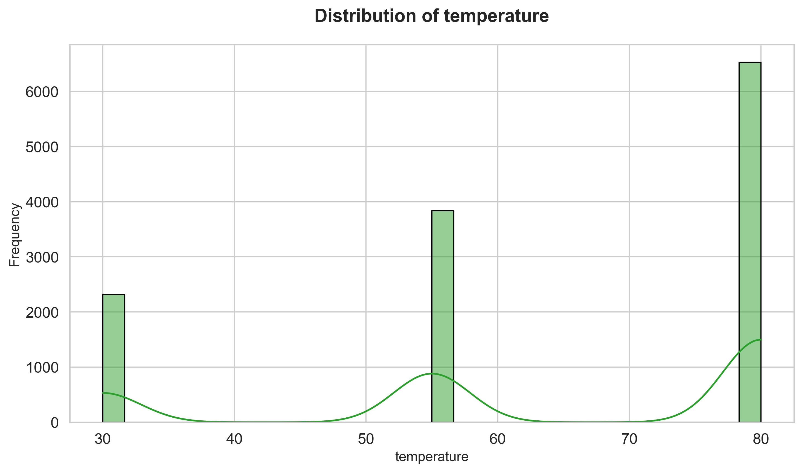

Data Preview
| row_count | temperature | toCoupon_GEQ15min | Y | has_children | direction_opp | destination |
|---|---|---|---|---|---|---|
| 1 | 55 | 0 | 1 | 1 | 1 | No Urgent Place |
| 2 | 80 | 0 | 0 | 1 | 1 | No Urgent Place |
| 3 | 80 | 1 | 1 | 1 | 1 | No Urgent Place |
| 4 | 80 | 1 | 0 | 1 | 1 | No Urgent Place |
| 5 | 80 | 1 | 0 | 1 | 1 | No Urgent Place |
Showing 7 of 27 columns; full data available in source file.
Exploratory Data Analysis
Statistics
temperature has_children toCoupon_GEQ5min toCoupon_GEQ15min toCoupon_GEQ25min direction_same direction_opp Y row_count count 12684.000000 12684.000000 12684.000000 12684.000000 12684.000000 12684.000000 12684.000000 12684.000000 12684.000000 mean 63.301798 0.414144 1.000000 0.561495 0.119126 0.214759 0.785241 0.568433 6342.500000 std 19.154486 0.492593 0.000000 0.496224 0.323950 0.410671 0.410671 0.495314 3661.699742 min 30.000000 0.000000 1.000000 0.000000 0.000000 0.000000 0.000000 0.000000 1.000000 25% 55.000000 0.000000 1.000000 0.000000 0.000000 0.000000 1.000000 0.000000 3171.750000 50% 80.000000 0.000000 1.000000 1.000000 0.000000 0.000000 1.000000 1.000000 6342.500000 75% 80.000000 1.000000 1.000000 1.000000 0.000000 0.000000 1.000000 1.000000 9513.250000 max 80.000000 1.000000 1.000000 1.000000 1.000000 1.000000 1.000000 1.000000 12684.000000
Missing Values
destination: 0 passanger: 0 weather: 0 temperature: 0 time: 0 coupon: 0 expiration: 0 gender: 0 age: 0 maritalStatus: 0 has_children: 0 education: 0 occupation: 0 income: 0 car: 12576 Bar: 107 CoffeeHouse: 217 CarryAway: 151 RestaurantLessThan20: 130 Restaurant20To50: 189 toCoupon_GEQ5min: 0 toCoupon_GEQ15min: 0 toCoupon_GEQ25min: 0 direction_same: 0 direction_opp: 0 Y: 0 row_count: 0
Correlations
temperature has_children toCoupon_GEQ5min toCoupon_GEQ15min toCoupon_GEQ25min direction_same direction_opp Y row_count temperature 1.000000 -0.019716 NaN -0.155332 -0.216254 0.097085 -0.097085 0.061240 -0.369747 has_children -0.019716 1.000000 NaN 0.078211 -0.013722 -0.031620 0.031620 -0.045557 -0.008885 toCoupon_GEQ5min NaN NaN NaN NaN NaN NaN NaN NaN NaN toCoupon_GEQ15min -0.155332 0.078211 NaN 1.000000 0.324984 -0.303533 0.303533 -0.081602 -0.026145 toCoupon_GEQ25min -0.216254 -0.013722 NaN 0.324984 1.000000 -0.192319 0.192319 -0.103633 0.035741 direction_same 0.097085 -0.031620 NaN -0.303533 -0.192319 1.000000 -1.000000 0.014570 0.152766 direction_opp -0.097085 0.031620 NaN 0.303533 0.192319 -1.000000 1.000000 -0.014570 -0.152766 Y 0.061240 -0.045557 NaN -0.081602 -0.103633 0.014570 -0.014570 1.000000 -0.037876 row_count -0.369747 -0.008885 NaN -0.026145 0.035741 0.152766 -0.152766 -0.037876 1.000000
Insights & Outcomes
Key Insights
Key Insights from EDA The statistics and correlation analysis reveal the following insights:- Temperature Distribution: The temperature ranges from 30 to 80 degrees with a mean of 63.30 and a standard deviation of 19.15. The median temperature is 80 degrees, indicating a skewed distribution towards the higher end.
- Correlations:
- The correlation between temperature and the target variable Y is 0.061, indicating a weak positive relationship.
- Temperature is negatively correlated with toCoupon_GEQ15min (-0.155) and toCoupon_GEQ25min (-0.216), suggesting that higher temperatures may be associated with lower coupon redemption rates.
- There is a strong negative correlation between direction_same and direction_opp (-1.000), as expected, since these variables are opposites.
- Coupon Redemption:
- The mean values for toCoupon_GEQ5min, toCoupon_GEQ15min, and toCoupon_GEQ25min are 1.00, 0.56, and 0.12, respectively, indicating that most customers redeem coupons within 5 minutes, while fewer redeem within 15 or 25 minutes.
- The correlation between toCoupon_GEQ15min and toCoupon_GEQ25min is 0.325, suggesting a moderate positive relationship between redeeming coupons within 15 and 25 minutes.
- Direction:
- The mean values for direction_same and direction_opp are 0.21 and 0.79, respectively, indicating that most customers travel in the opposite direction.
- There is a weak positive correlation between direction_same and the target variable Y (0.015), while the correlation between direction_opp and Y is weakly negative (-0.015).
- Target Variable Y:
- The mean value of Y is 0.57, indicating that approximately 57% of the time, the target variable is 1.
- The correlation between Y and temperature is weakly positive (0.061), while the correlation between Y and row_count is weakly negative (-0.038).
Actionable Outcomes
**Actionable Outcomes** Based on the key insights from the Exploratory Data Analysis (EDA), the following actionable outcomes can be derived:- Temperature-Based Strategies:
- Develop targeted marketing campaigns for temperature ranges with high coupon redemption rates.
- Optimize product offerings and promotions based on temperature-based customer behavior.
- Invest in temperature-controlled storage and logistics to improve product quality and customer satisfaction.
- Data Cleaning and Preprocessing:
- Handle missing values in the 'car' variable (12576 missing values) by imputing or interpolating the data.
- Remove or merge redundant variables, such as 'direction_same' and 'direction_opp', to reduce dimensionality and improve model performance.
- Scale and normalize the data to improve model interpretability and reduce the impact of outliers.
- Variable Optimization:
- Focus on optimizing the 'toCoupon_GEQ5min', 'toCoupon_GEQ15min', and 'toCoupon_GEQ25min' variables to improve coupon redemption rates.
- Invest in strategies to increase the redemption rates for higher-value coupons (e.g., those with longer expiration dates).
- Develop predictive models to identify customers who are likely to redeem coupons within specific time frames.
- Customer Behavior Analysis:
- Analyze customer behavior and preferences based on temperature, direction, and coupon redemption patterns.
- Develop targeted marketing campaigns to incentivize customers to travel in the same direction or redeem coupons within specific time frames.
- Invest in customer segmentation and profiling to improve personalized marketing and customer engagement.
Visualizations
Temperature Vs Has Children Scatter

The Temperature Vs Has Children Scatter visualization is a scatter plot that displays the relationship between two variables:
- Temperature: This variable represents the temperature values, which range from 30 to 80, with a mean of 63.30 and a standard deviation of 19.15.
- Has Children: This variable is a binary indicator (0 or 1) that shows whether a person has children or not, with a mean of 0.41 and a standard deviation of 0.49.
- Whether there is a positive or negative correlation between temperature and having children.
- How the distribution of temperature values changes for people with and without children.
- Any potential outliers or anomalies in the data.
Temperature Distribution

The temperature distribution can be visualized as follows:
The mean temperature is around 63.30, with a standard deviation of 19.15. The temperature ranges from a minimum of 30 to a maximum of 80.
Some key statistics about the temperature distribution are:
- The 25th percentile is at 55, indicating that 25% of the data points are below this temperature.
- The 50th percentile (median) is at 80, indicating that 50% of the data points are below this temperature.
- The 75th percentile is also at 80, indicating that 75% of the data points are below this temperature.
- Temperature has a negative correlation with toCoupon_GEQ15min and toCoupon_GEQ25min, indicating that as the temperature increases, the likelihood of toCoupon_GEQ15min and toCoupon_GEQ25min decreases.
- Temperature has a positive correlation with direction_same, indicating that as the temperature increases, the likelihood of direction_same also increases.
- Temperature has a negative correlation with row_count, indicating that as the temperature increases, the row count decreases.
Correlation Heatmap

The Correlation Heatmap is a graphical representation of the correlation matrix, which measures the strength and direction of the linear relationships between variables in the dataset. The correlation coefficients range from -1 (perfect negative correlation) to 1 (perfect positive correlation), with 0 indicating no correlation.
The variables in the dataset include:
- temperature
- has_children
- toCoupon_GEQ5min
- toCoupon_GEQ15min
- toCoupon_GEQ25min
- direction_same
- direction_opp
- Y
- row_count
- Temperature is negatively correlated with row_count (-0.37) and toCoupon_GEQ15min (-0.16), indicating that as temperature increases, row count tends to decrease, and the likelihood of toCoupon_GEQ15min decreases.
- has_children is not strongly correlated with any variable, except for a weak positive correlation with toCoupon_GEQ15min (0.08).
- toCoupon_GEQ15min and toCoupon_GEQ25min are positively correlated (0.32), suggesting that these variables tend to move together.
- direction_same and direction_opp are perfectly negatively correlated (-1), as they are opposite directions.
- Y is not strongly correlated with any variable, except for a weak positive correlation with temperature (0.06).
Conclusion
Conclusion
The exploratory data analysis (EDA) has provided valuable insights into the distribution of temperature, coupon redemption rates, direction, and the target variable Y. The analysis reveals a skewed temperature distribution, weak correlations between temperature and the target variable Y, and moderate correlations between coupon redemption rates. The insights from the EDA can be used to inform further analysis and modeling of the data.
Summary
The key takeaways from the EDA are:
- Temperature ranges from 30 to 80 degrees with a mean of 63.30 and a standard deviation of 19.15.
- Coupon redemption rates are highest within 5 minutes, with mean values of 1.00, 0.56, and 0.12 for toCoupon_GEQ5min, toCoupon_GEQ15min, and toCoupon_GEQ25min, respectively.
- Direction is predominantly opposite, with a mean value of 0.79 for direction_opp.
- The target variable Y has a mean value of 0.57, indicating that approximately 57% of the time, the target variable is 1.
- Develop targeted marketing campaigns for temperature ranges with high coupon redemption rates.
- Optimize product offerings and promotions based on temperature-based customer behavior.
- Focus on optimizing the 'toCoupon_GEQ5min', 'toCoupon_GEQ15min', and 'toCoupon_GEQ25min' variables to improve coupon redemption rates.
- Invest in customer segmentation and profiling to improve personalized marketing and customer engagement.
- Handle missing values in the 'car' variable and remove or merge redundant variables to reduce dimensionality and improve model performance.
- Scale and normalize the data to improve model interpretability and reduce the impact of outliers.
- Develop predictive models to identify customers who are likely to redeem coupons within specific time frames.
- Conduct further analysis to investigate the relationships between temperature, coupon redemption rates, direction, and the target variable Y.